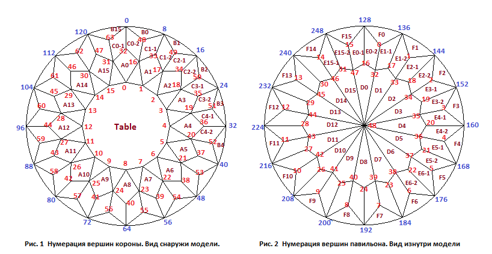

В данном разделе мы создадим модель огранки, которую можно назвать подсолнечник. Положим для этой огранки 128 граней рундиста. Вследствие этого на павильоне и короне мы можем расположить достаточно много четырехугольных граней определяющих ее внешний вид. Эти грани, если они раскрашены, имеют вид гармошки или, даже, подсолнечника. Полезно проследить последовательность и способы построения граней. Следует напомнить, что огранки алмазов должны обязательно быть (кроме специальных их типов) выпуклыми, и поэтому, так как данная модель имеет много граней на павильоне и короне, следует проявить особую внимательность при ее построении. С одной стороны желательно чтобы огранка была более рельефной. Но с другой стороны делать это надо осторожно, чтобы на ней не появились впадины, которые нарушат выпуклость. Поэтому нужно постоянно следить за азимутами и наклонами граней.
Есть еще одна особенность построения моделей многогранников. Если могогранник в основном образуют треугольные грани, то такие многогранники обычно более просто построить, чем те, которые имеют много четрехугольных (и более) граней. Это связано с тем, на первый взгляд очевидным фактом, что четырехугольная грань может лежать только в одной плоскости. В противном случае она будет сломана. Треугольник всегда проходит через три точки и обязательно лежит в одной плоскости, но для четырехугольника выбор четвертой точки иногда представляется большой проблемой - как связать две грани имеющие общую точку (или прямую) не сломав ни одну из этих граней. Пример - мы строим четырехугольную грань по трем точкам, а четвертая ее точка должна принадлежать еще одной грани лежащей в другой плоскости. Иногда, при неправильном построении, можно не сразу заметить, что первая грань оказалась сломанной. То, из каких многоугольников (или треугольников) и каким образом будет построен многогранник во многом (но не во всем) зависит от выбора набора параметров входящих в СДМ.
Схематичные изображения короны и павильона огранки, а также нумерация вершин показаны на рисунке 1 и 2. На рисунке 1 показана нумерация вершин короны при взгляде на нее сверху, а на рисунке 2 - нумерация вершин павильона при взгляде на него также сверху, но наблюдатель при этом находится внутри модели (или просто смотрит на модель сверху, но корона при этом является абсолютно прозрачной). Как уже говорилось при разработке модели бриллианта, при таком изображении граней короны и павильона они сопоставлены друг другу более естественным образом.
Следует только не забывать, что при таком изображении павильона обход его вершин (на рисунке 2) происходит по часовой стрелке. Обход вершин короны (на рисунке 1), как и положено, производится против часовой стрелки.
var lw = 1.0; // отношение длины огранки к ее ширине // Рундист var r = 0.04; // толщина рундиста var square_deviation = 0.00001; // квадратичность рундиста // Корона var hCrown = 0.2; // высота короны var beta = 40*DEGREE; // угол наклона граней короны A0 - A15 var t = 0.54; // ширина площадки var hCrownDn = 0.055; // высота вершин 48, 49, 50, ... 63 короны var hCrownMid = 0.06; // высота вершин 32, 33, 34, ... 47 короны var hCrownUp = 0.115; // высота вершин 16, 17, 18, ... 31 короны // Павильон var hp = 0.58; // глубина павильона var hPavFacet = 0.52; // задает глубину вершин 32, 33, ... 47 павильона var ang_pav_main = 45*DEGREE; // угол наклона граней D0, D1, ... D15 павильона var hPavUp = 0.12; // задает глубину вершин 0, 1, ... 15 павильона var ang_pav_up = 56*DEGREE; // угол наклона граней F0, F1, ... F15 павильона